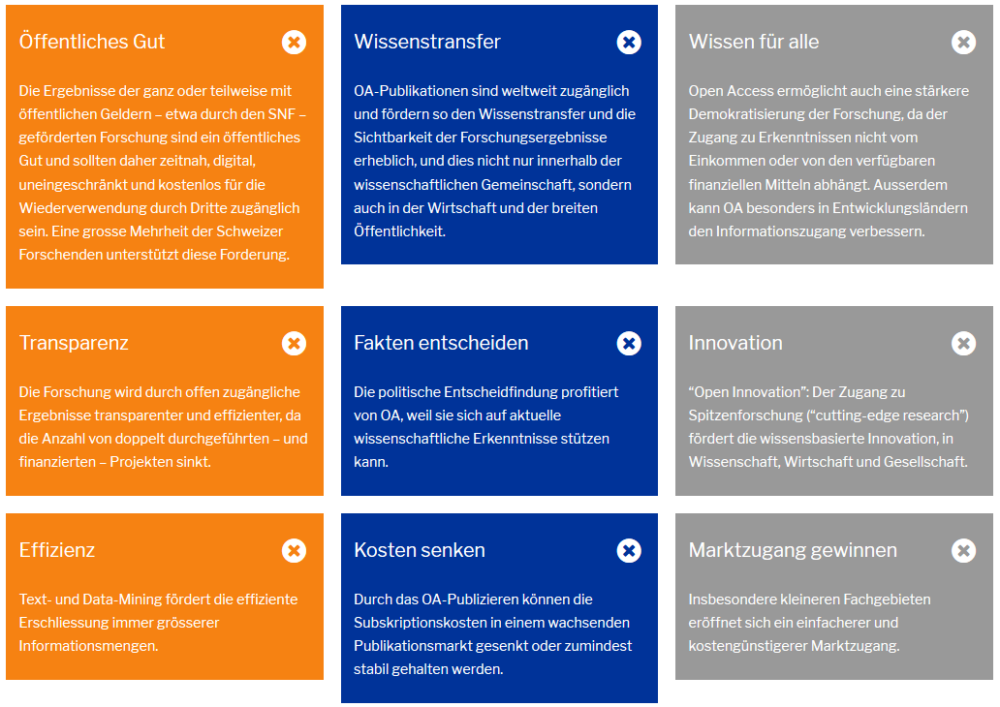
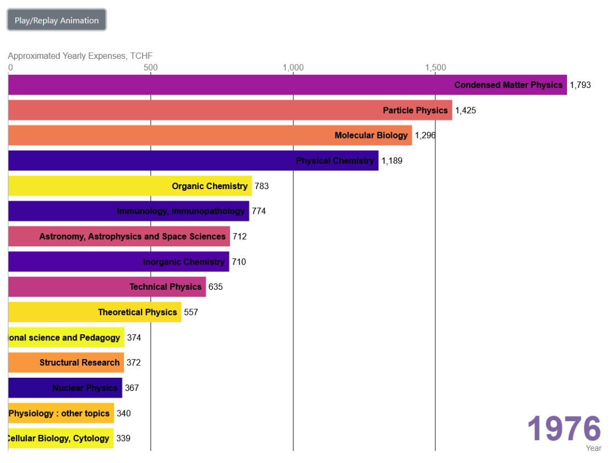
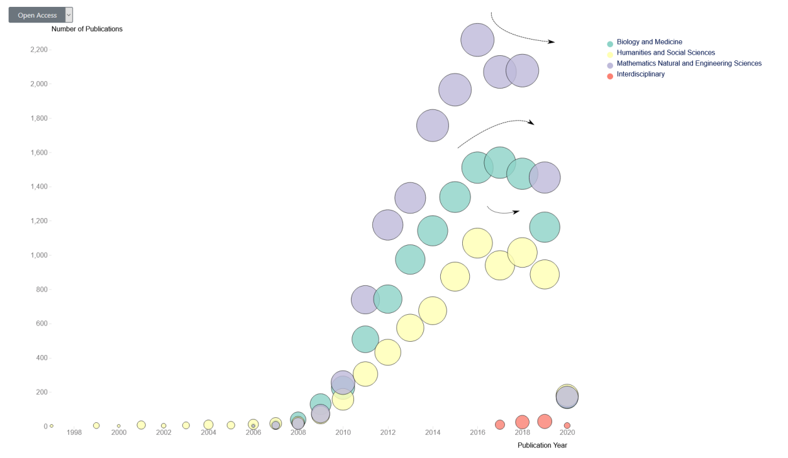
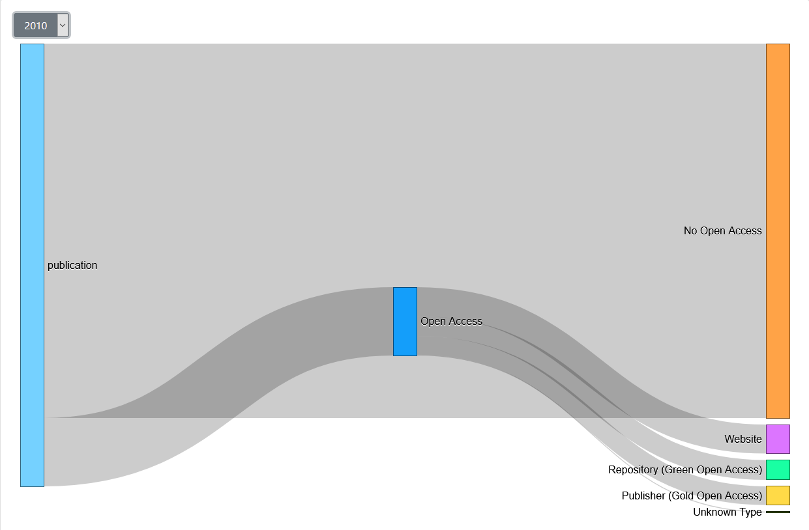
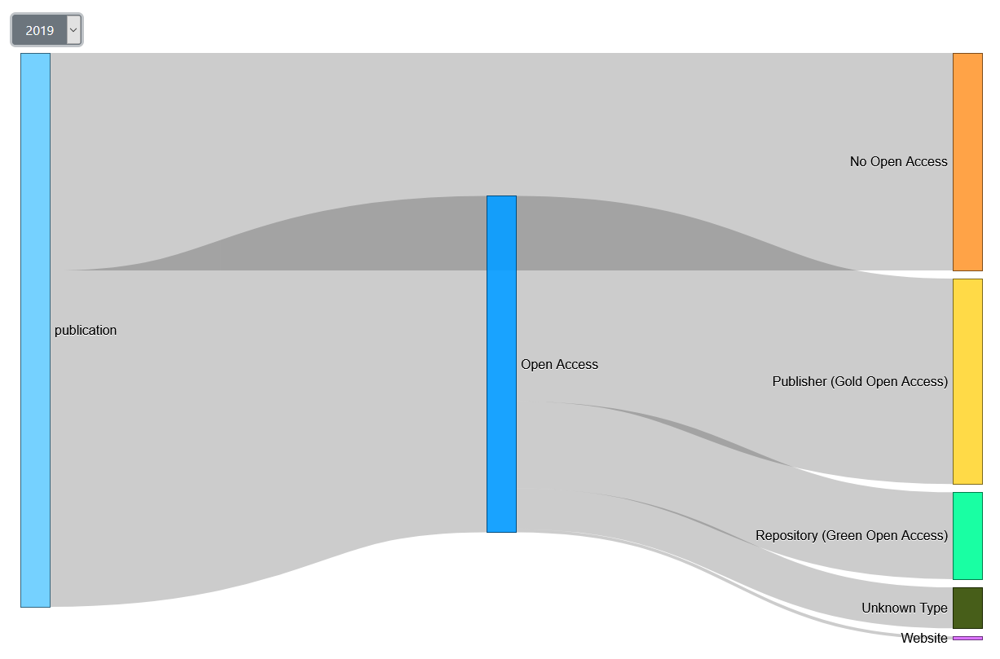
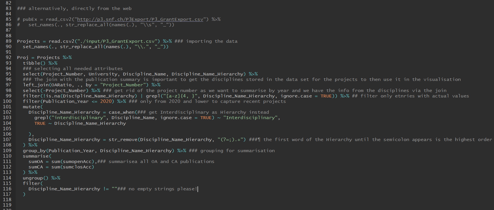
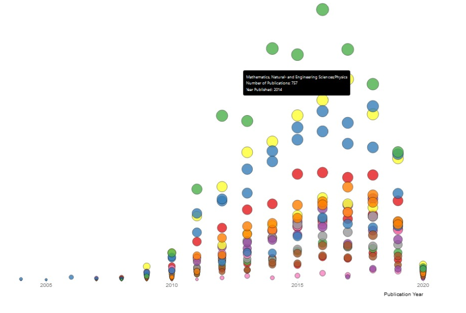

Entwicklung der SNF Unterstützungsgelder nach Forschungsrichtung
In dieser Animation lassen sich die Trends der letzten 45 Jahre miterleben. Erfahren Sie, bei welchen Forschungsrichtungen der Schweizerische Nationalfonds über die Jahre Finanzierungsschwerpunkte gesetzt hat. Eine Analyse dazu finden Sie im Tab Interpretation.
Anzahl Open Access Publikationen im Jahresverlauf
Hier lässt sich mit Jahresverlauf nachverfolgen,
wie viele Publikationen der vom SNF finanzierten Projekte
letztendlich frei aufrufbar zur Verfügung standen - und wie viele
nicht.
Wechseln Sie mit der Auswahl zwischen den beiden Publikationsarten.
Fahren Sie mit dem Mauszeiger über die Grafik, um sich die Anzahl
Publikationen anzeigen zu lassen. Eine Analyse dazu
finden Sie im Tab Interpretation.
Legende Open Access:
- 0-0.5
- 0.5-2
- 2-3
- 3-4
- 4-5
Legende Closed Access:
- 0-1
- 1-3
- 3-5
- 5-8
- 8-10
Open Access Publikationen nach Forschungsrichtung
Hier zeigt sich einerseits die
Publikationsproduktivität
der einzelnen
Forschungsrichtungen im Jahresverlauf und andererseits die freie
Verfügbarkeit der
Publikationen. Mit der Auswahl können Sie zwischen Open- und
Closed-Access Publikationen wechseln.
Eine Analyse dazu finden Sie im Tab
Interpretation.
Legende:
- Biologie und Medinzin
- Gesellschafts- und Sozialwissenschaften
- Natur- und Ingenieurswissenschaften
- Interdisziplinär
Arten der Publikations-Zugänglichkeit und ihre Häufigkeit
Hier wird für ein auswählbares Jahr dargestellt, welche Publikationsarten dass bei vom SNF unterstützten Projekten gewählt wurden. Fahren Sie mit dem Mauszeiger über die Grafik, um sich die Anzahl Publikationen anzeigen zu lassen. Eine Analyse dazu und die Bedeutung der verschiedenen Open Access Arten finden Sie im Tab Interpretation.
Idee zur Visualisierung
Wenn Forschung mit öffentlichen Mitteln finanziert wird, sollten die Forschungsergebnisse der Öffentlichkeit auch kostenlos und einfach zugänglich zur Verfügung stehen - oder? Hört sich schlüssig an, ist in der Praxis aber überhaupt nicht zwingend der Fall. Forscher stehen im Konflikt zwischen einer Publikation in renommierten aber häufig kostenpflichtigen Fachzeitschrift, versus Open Source Publikation. Nicht immer liess sich das bisher vereinbaren. Darum haben die Hochschulen der Schweiz in einer nationalen Strategie beschlossen, dass alle mit öffentlichen Geldern finanzierten Publikationen ab 2024 frei zugänglich sein sollen. Open Access wird in der Schweiz und weltweit zum Standard. Der Schweizerische Nationalfonds fügt sich hier ein mit folgendem Ziel: Ab 2020 sollen 100% der Resultate der von ihm finanzierten Projekte in frei zugänglichen Publikationen oder Datenbanken sein (Quelle: SNF Statement Open Access Publications). Die Ersteller dieser Visualisierungen haben sich über diese grosse Ankündigung gefreut und sie zum Anlass genommen, die bisherige Entwicklung zu beleuchten. Dazu wurde visualisiert, zu wie vielen Open- und Closed Source Publikationen die vom Schweizerischen Nationalfonds finanzierten Projekte geführt haben. Der Fokus lag dabei auf dem zeitlichen Verlauf, der Finanzierung, den Forschungsrichtungen und der Open Access Art.
Die Vorteile von Open Access
Quelle: SNF Open Access Website
Verschiedene Arten von Open Access
Gold Open Access:
Die Forschenden veröffentlichen ihre Resultate in OA-Zeitschriften und OA-Büchern, die sofort frei zugänglich sind. Beim diesem Weg leisten die Autorinnen und Autoren oft einen Beitrag an die Herstellungskosten. Der SNF bietet an, diese Kosten zu bezahlen. Die Unterstützung lässt sich über die digitale Plattform mySNF beantragen.Green Open Access:
Die Forschenden publizieren die Resultate in einer kostenpflichtigen Zeitschrift, legen ihren Artikel aber spätestens nach 6 Monaten in einer öffentlichen Datenbank ab. Für Bücher gilt eine Frist von 12 Monaten.Interpretation der SNF Funding Animation
Bezug
In dieser Animation ist nicht direkt ersichtlich, wie viel Budget des Schweizerischen Nationalfonds in Open Access Publikationen floss. Es werden jedoch generelle Finanzierungstrends aufgezeigt, die nebenbei auch schön den Zeitgeist aufzeigen.Finanzierungstrends
Von 1976 (siehe Bild) bis 1986 bekam fast durchgehend die Forschungsrichtung Condensed Matter Physics die meisten Gelder, gefolgt von weiteren Zweigen der Physik, Chemie und Biologie. Naturwissenschaften dominierten, einzig die Ökonomie bekam zwischen 1980 und 1985 ähnlich viel Budget zugesprochen. Von 1987 bis 1995 waren der Reihe nach Structural Research, Clinical Enocrinology, Clinical Pathophysiology und dann Climatology hoch im Kurs. Danach bekam von 1996 bis 2000 die Forschungsrichtung Particle Physics ein Grossteil der Gelder zugesprochen. Ab 2000 ebenfalls stark und von 2005 bis 2010 sogar dominierend bei der Budgetverteilung war Clinical Immunology and Immunopathology. Ab der Jahrtausendwende wurde vermehrt in Projekte der Gesellschafts- und Sozialwissenschaften investiert. Von 2010 bis 2017 gab es keine absoluten Funding-Spitzenreiter mehr, das Budget wurde (zumindest in den Fachzweiten) ziemlich ausgewogen verteilt. Plasma Physics war häufig vorne anzutreffen. Ab 2017 sind keine Trends mehr ersichtlich, das liegt an der Datenstruktur und wird im nächsten Abschnitt näher erläutert.Datenqualität
Die wenigsten Datensätze werden über eine Zeitspanne von 45 Jahren auf dieselbe Art und Weise aktualisiert, auch dieser nicht. So können Finanzierungsschwerpunkte manchmal von der Bildfläche verschwinden aufgrund der Umbenennung oder Aufsplittung eines Projektgebietes. Dafür, dass sie gar nicht mehr erscheinen, sorgt ab 2017 die Interdisciplinary-Problematik: Der SNF weist einem Projekt seit spätestens 2017 die Forschungsrichtung Interdisciplinary zu, wenn es mehrere Forschungsrichtungen gleichzeitig umfasst. Beispielsweise ein Projekt von 2018 zur Entwicklung von Biomarkern umfasst die Richtungen Immunologie, Radiologie und Machine Learning. Das macht auf dem Papier Sinn, sorgt aber dafür, dass ab 2017 der Grossteil der Gelder zumindest für eine Trendanalyse nur noch über Umwege einer Forschungsrichtung zugewiesen werden kann.
Bild: SNF Funding Animation
Interpretation der Bubble Charts Open und Closed Access
Verteilung der Publikationen im Jahresverlauf
Open- wie Closed Access Bubble Graphen sind links-schief. Diese Verteilung zeigt ein exponentieller Anstieg der Publikationen bis 2016. Dieser Anstieg erklärt sich nur zu einem kleinen Teil aus der höheren Anzahl finanzierter Projekte und höherem Budget. Ab 2016 ist die Zahl der Publikationen rückläufig (aus der Analyse ausgenommen: Jahr 2020), das gilt für alle Hauptforschungsrichtungen. Das muss nicht zwingend schlecht sein, da Merkmale wie Publikationsgrösse und Qualität hier nicht sichtbar sind.Open vs. Closed Access Publikationen
Wie in der Visualisierung Anzahl Open Access Publikationen im Jahresverlauf klarer ersichtlich, übersteigt im Jahr 2019 die Anzahl Open Access Publikationen erstmals die Anzahl Closed Publikationen. Im Tab Open Access Publikationen ersichtlich: Die Closed Access Publikationen hatten ihren Peak im Jahr 2013 und seither schwinden sie immer rasanter. Sie machen Platz für die Open Access Publikationen. Letztere sind nicht dadurch auf dem, Überholkurs, weil sie rasant ansteigen, sondern einfach weil sie stagnieren bzw. nur leicht zurückgehen. Das Ganze möglich machte, wie in der Gegenüberstellung ersichtlich, ein mit nur 3 Jahre Verzögerung auf die Closed Access Publikationen einsetzender exponentieller Anstieg der Open Access Publikationen.Die Unterschiede bei den Hauptforschungsrichtungen
Unterschiede zwischen den Hauptforschungsrichtungen sind in der Visualisierung Open Access nach Forschungsrichtung zu erkennen. Sie sind primär geprägt durch die höhere Anzahl Gesamtpublikationen. Die meisten Publikationen aus SNF-finanzierten Projekten stammen von den Natur- und Ingenieurwissenschaften, gefolgt von Biologie und Medizin und zum Schluss Geistes- und Sozialwissenschaften (auf die Interdisziplinären Projekte wird in der Interpretation des Sankeys näher eingegangen). Diese bewegen sich mehrheitlich im Gleichschritt. Dennoch zeigt die Visualisierung, dass die Richtung Biologie und Medizin in den Jahren 2017 und 2018 punkto Anteil Open Access Publikationen den anderen davonzog. Während die anderen Hauptforschungsrichtungen leicht rückläufig waren und dann stagnierten, legte Biologie und Medizin temporär zu. Dies weist auf gute Initiativen hin zu dieser Zeit. Im Folgejahr (2019) konnten die anderen Forschungsrichtungen nachziehen.
Bild: Chart Open Access Publikationen nach Forschungsrichtung
Interpretation des Sankeys Open Access Arten
Datenqualität
Vor dem Jahr 2008 sind die absoluten Publikationszahlen mit dem Access-Merkmal sehr klein, darum sind die älteren Zahlen mit Vorsicht zu geniessen. Die erfasste Gesamtpublikationszahl steigt dann in den beiden Folgejahren aber rasant. Die damals klar dominierenden No Access Publikationen sind entsprechend kein Zufallsprodukt der Datensätze, sondern waren Realität.Düstere Vergangenheit
Noch im Jahr 2010 (siehe erstes Bild) dominierten die No Access Publikationen, 3513 von insgesamt 4154 waren nicht öffentlich zugänglich. Ihr Anteil nahm von Jahr 2009 auf 2010 sogar leicht zu.Open Access Trend
Ab 2011 setzte ein stetiger Trend zu Open Access Publikationen ein. Lange nahm deren Anteil gleichmässig zu, bis er sich dann ab 2017 in grossen Sprüngen erhöhte.Mehr Open als Closed
Ab 2019 (siehe zweites Bild) gab es dann das erste Mal mehr Open Access Publikationen (3552) als Closed Access Publikationen (2297), und dies gleich deutlich. Seit 2017 ist ein starker Trend zu Gold Open Access zu erkennen (im Vergleich zu Green Open Access ). Zuvor waren Green und Gold Open Access Publikationen immer etwa ähnlich häufig.Website Publikation als Open Access Art
Im Sankey wird einen starken Rückgang der Website Open Access Publikationen ersichtlich. Falls dem so ist (und diese Publikationen nun nicht stattdessen als Unknown Type Publikationen in der Statistik erscheinen) begrüssen die Ersteller diese Entwicklung. Denn eine Publikation auf z.B. der Websites eines Instituts ist zwar Open Access, aber über die Jahre können solche Links ins Leere führen. Die Wartung dieser Links ist nicht garantiert, es könnte in manchen Fällen ein ungewollter Closed Access resultieren.Das Jahr 2020
In der ersten Jahreshälfte bestätigt sich die Fortsetzung des Open Access Trends. Dennoch wird der SNF sein selbst gesetztes Ziel von 100% Open Access Resultaten natürlich noch nicht erreichen. Es ist anzunehmen, dass dieses Ziel die Projekte (und deren Publikationen) ab 2020 betrifft und nicht die Publikationen von Projekten, die bereits vor diesem Stichdatum anliefen.
Bild: Sankey 2010

Bild: Sankey 2019
Vorschläge der Ersteller für weiteres Vorgehen
Wie in den Interpretationen festgestellt, hat der Schweizerische Nationalfonds sein 100% Open Access Ziel auf das Jahr 2020 angesetzt - in den Zahlen wird sich das aber erst mit Verspätung niederschlagen. Dies aus dem in der Interpretation genannten Grund: Vom Sponsoring eines Projektes bis zur Publikation der Ergebnisse können einige Jahre vergehen. Deshalb schlagen die Ersteller vor, mit diesen oder ähnlichen Visualisierungen den Projektverlauf auch in den weiteren Jahren mitzuverfolgen. Ausserdem sollte weiterhin auf die Open Access Arten geachtet werden, es kann auch dort noch frappante Unterschiede geben.
Herkunft der Daten
Im Rahmen seiner Pflichten, informiert der Schweizerische Nationalfonds (SNF) die Öffentlichkeit über seine Förderungstätigkeit und veröffentlicht in seiner Forschungsdatenbank P3 Daten zu den von ihm geförderten Projekten, Personen und Publikationen.
P3 Quellen
P3 wird täglich aktualisiert. Sobald ein Beitrag freigegeben ist, werden die entsprechenden Daten in P3 veröffentlicht. Die Freigabe eines Beitrages fällt nicht notwendigerweise mit der Zusprache zusammen und kann zu einem wesentlich späteren Zeitpunkt erfolgen, zum Beispiel, wenn vor Forschungsbeginn Genehmigungen erwirkt werden müssen.
| Quelle | Daten/Inhalt |
|---|---|
| P3_PublicationExport | Publikationen (aus SNF-finanzierten Projekten) |
| P3_GrantExport | Projekte (SNF-finanziert) |
Datenaquise/Datenbereinigung
Die P3 daten wurden zum grössten Teil mit R bereinigt. R wird allgemeint für statistische
Berechnungen verwendet, bietet aber seit einiger Zeit viele Hilfreiche Tools für Data Wrangling. Es war hier das
Tool der Wahl um auf effizientem Wege Daten zu Generieren, die von einer uns fremden Programmiersprache gelesen werden sollten.

Bild: R Logo
Racing Chart
Für die Erstellung des Racing Charts war der Gebrauch von R relativ wichtig, da und es wurde in folgenden Schritten vorgegangen: Die Datensätze P3_PublicationExport und P3_GrantExport enthalten beide für diese Grafik relevante Daten. P3_PublicationExport ist relevant, da Informationen über Publikationen darin enthalten sind. Hier war insbesondere die Disziplin wichtig. P3_GrantExport hingegen enthält finanzielle Daten, die über die eine Projektnummer, welche in beiden Datensätzen identisch, bzw. der Schlüssel ist. Diese Daten können dann via Join zusammengefügt werden wobei dann die beiden relevanten Informationen bezüglich finanziellen Daten, sowie Jahrzahlen von Projekt Start -und Ende, sowie der Disziplin in einem Datensatz sind.
Um Gesprochene Forschungsbeiträge auf jedes Jahr eines Projektes, welches es zurücklegt aufzuschlüsseln, mussten die gesprochenen Beiträge gleichmässig auf jedes Projektjahr gruppiert aufgeteilt werden, damit jedes Jahr einen Betrag erhält. Damit aber die Grafik den Effekt einer kontinuierlichen Steigerung/Senkung an Geldmengen bekommt, musste eine noch feinere Auflösung in die Daten. Es wurden dann in einem letzten Schritt alle Jahre auf ein Zehntel Jahr aufgeteilt, wobei dann die Geldmengen pro Zehntelsjahr kumulativ gruppiert nach Diszipline aufsummiert wurden. Der gesamte Code für diese Operationen finden Sie im Github Repos unter

Bild: R Code stark mit starkem Gebrauch von Tidyverse
Bubble Plots
Die Herangehensweise für die Datenaufbereitung für beide Bubbleplots war sehr ähnlich und wird hier für beide Grafiken zusammengefasst. Bei dieser Grafik wurde mehr Bezug genommen auf den Open Access/Open Science Aspekt dieser Daten. Innerhalb von P3_PublicationExport befindet sich eine boolesche Variable ob eine Publikation als Open Access registriert ist, oder nicht und ebenfalls wird, falls vorhanden der Open Access Lizenztyp aufgeführt als Ordinale Variable. Für den ersten Bubble Plot wird einfach gruppiert nach Jahr die Information ob Open Access ja/nein aufsummiert.
Für die zweite Grafik, welche ja in der Legende noch entsprechende Forschungsrichtungen aufweist, wurde folgendermassen vorgegangen:
Der SNF verwaltet Projekte nach Hierarchiestufen. Diese fangen mit der obersten Stufe an, welche entweder Biologie & Medizin, Gesellschaft- und Sozialwissenschaften, Natur -und Ingenieurswissenschaften, sowie auf Interdisziplinäre Projekte aufgeteilt ist. Die Hierarchie endet meist mit einer spezifischen Disziplin, wie Pädagogik, etc.
Diese Hierarchie ist in einem Textstring als Variable im Datensatz vorhanden. Im ersten Versuch, wurde die ganze Hierarchie übernommen und die Grafik nach letzterer gruppiert. Das Problem war aber, dass die Grafik überladen war und damit schlecht leserlich. Ebenfalls hat sich die ordinale Farbskala wiederholt, was zu Verwirrungen führen könnte.

Bild: Erster Versuch des gruppierten Bubble Plots
Wir haben uns dann dafür entschieden die oberste Stufe der Hierarchie als Gruppierung zu nehmen, was der Grafik sehr viel mehr Luft verschaffen sollte. Um das zu bewerkstelligen, wurde mit einem positiven lookbehind das Semikolon gemachted, welches die oberste Stufe des "Hierarchiestrings" vom Rest trennt. Ein Beispiel eines solchen Textstrings kann so aussehen:
"Humanities and Social Sciences;Theology & religious studies, history, classical studies, archaeology, prehistory and early history"
Nimmt man jetzt obingen String als Beispiel, so wird daraus "Humanities and Social Sciences", da alles nach dem Semikolon wegfällt. Auf diese Weise haben wir unsere Gruppierung geschaffen.
Der Komplette Code für diese Datenaufbereitung kann
Sankey
Sankeys erfordern Netzwerkdaten, welche Informationen darüber enthalten, von welchem Knotenpunkt in einem Netzwerk zu einem anderen wie viel Menge (Hier Publikationen) fliesst. Hier wurde wieder mit Publikationsdaten gearbeitet, wobei nun auch der Typ der Open Access Lizenz in betracht gezogen wurde. Jeder Punkt kann als Source oder Target, oder im Falle eines Verbindungsstücks (vgl. Knoten Open Access im Sankey Diagramm). Die Verbindungen geben dann an von welchem Punkt zu einem Anderen die Route geht und der zugehörige Wert gibt an, wie viele Publikationen dem jeweiligen Typ angehören.
Näher betrachtet ist die Publikation eines Artikels der Start, also die Quelle. Diese kann dann entweder Open Access oder nicht sein. Besteht kein Open Access, so endet die Reise schon hier. Besteht aber ein Open Access Status, so bestehen folgende Möglichkeiten:
-Green
-Gold
-Website
-Unknown
Diese Verbindungen kann man mit Aufsummierungen pro Gruppe (also Open Access: Ja/Nein; Open Access Typ) und der Deklaration von Gruppen als Quelle oder Ziel (oder beides) mit entsprechenden Flüssen an Publikationen quantifizieren. Dies wurde innerhalb eines simplen for Loops pro Jahr mit R
Es wurden Folgende R Libraries benutzt:
JS & D3
Racing Chart
Der "Racing Effekt" wurde damit erzielt, dass eine Tickerfunktion erstellt wurde, welche entlang der Zeitachse läuft und den "Fluss" der Gelder entsprechend darstellen kann indem die Masse der Balken konstant verändert werden. Solche D3 spezifischen Funktionen für Animationen waren uns völlig unbekannt, aber sie verlaufen wie ein Loop, welcher sich der Zeitachse entlangbewegt. Gleichzeitig gibt es ein konstantes Update aller beteiligten Zahlen, was Finanzzahlen, sowie die Jahreszahl beinhaltet.
Der Play/Replay Knopf startet dann immer die Funktion von Anfang an neu. Es wurde der Farbgradient
Bubble Charts
Die Bubble Charts sollten helfen den Übergang von durchaus interessanten Finanzdaten zu Publikationsdaten zu machen und waren Übergangsstück der Story. Diese Grafiken bestehen aus relativ ähnlichen Funktionen, welche Kreise entsprechend auf x & y Achse setzen und sich via Transition bewegen. Die Daten sind beim ersten Beispiel nach Open Access und Non-Open Access aufgeteilt.
Nur Open Access / non-Open Access
Wird das Drop-Down bedient, so werden die Daten entsprechend gefiltert und durch die Kreise repräsentiert. Eine Funktion, welche die Kreise bewegt, modifiziert entsprechend die Position letzterer. Im Falle dieses Charts wird der Farbgradient dem Maximum der Publikation angepasst.
Gruppiert nach Disziplin
Nur wenige Unterschiede zum nicht gruppierten Chart: Der Farbgradient ist hier ordinal und gruppiert sich nach den obersten Stufen der Disziplin-Hierarchie (siehe oben im "R-Teil"). Die Gruppierung ist logischerweise auch selbst in den angezeigten Daten vorhanden.
Beide Grafiken verfügen über entsprechende Tooltips, welche sich am Kreis im DOM orientieren und die y-Achsen sind dynamisch am jeweiligen Gruppenmaximum orientiert.
Sankey
Das Sankey Diagramm wurde mit den mit R kompilierten Netzwerkdaten erstellt. Die Farben entsprechen den jeweiligen Lizenztypen, oder einer persönlichen Interpretation einer Farbzuordnung. Der Sankey ist eine Funktion, welche direkt die Daten als .json liest und die Grafik erstellt. Via Dropdown können die Daten entsprechend nach Jahr gefiltert werden, was dann zur Folge hat, dass es jeweils ein Update im Sankey Diagramm gibt. Es wäre für uns sehr schön gewesen eine Transition zu machen, welche den Übergang beim Jahreswechsel etwas flüssiger hätte aussehen lassen, aber das Feature war dann nicht mehr in Scope mit dem Zeitbudget.
Allgemein
Die Applikation verfügt über ein Skript, welches die Aufgabe des Datenmanagements hat. Dieses Skript liest Daten via ajax() aus den Rohdaten und verteilt diese dann via Exporte an die entsprechenden Module. Die Idee hierbei war, dass das Daten-Management von den Visualisierungen getrennt sein sollte um den Code besser lesbar und wartbar zu machen.
Meist verwendete Libraries:
Lodash: Super Library für Leute, die viel R benutzen :-)
D3.js: Naja, das war klar
JQuery: Für Datenimporte via Ajax()
Über uns
Roman Abegglen
Student MSc Betriebswirtschaftslehreroman.abegglen@students.unibe.ch
Pascal Stöckli
Student MSc Betriebswirtschaftslehrepascal.stoeckli@students.unibe.ch